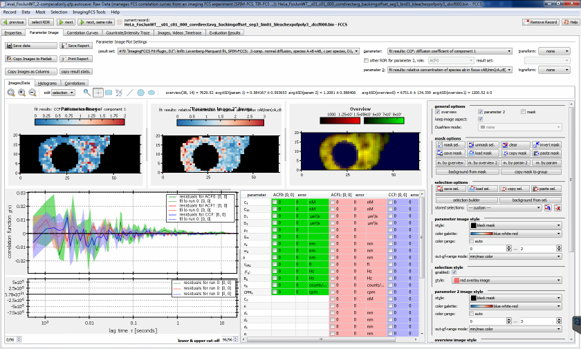
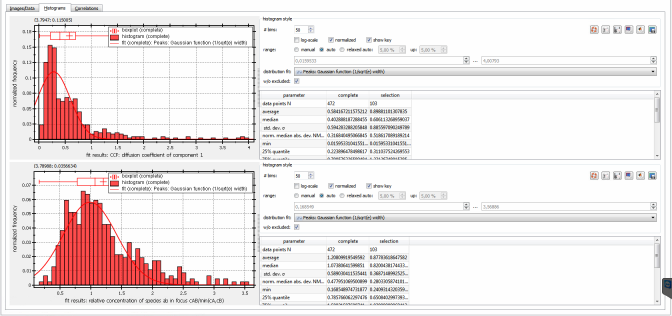
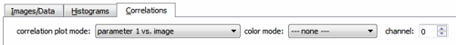
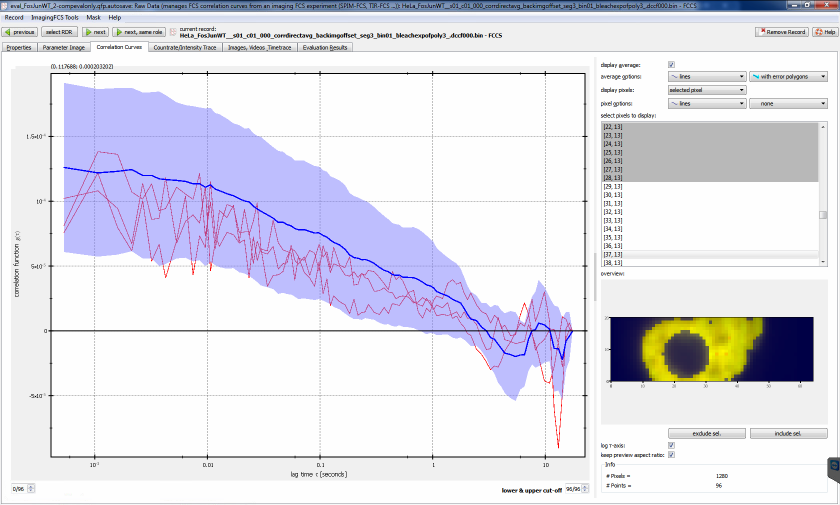
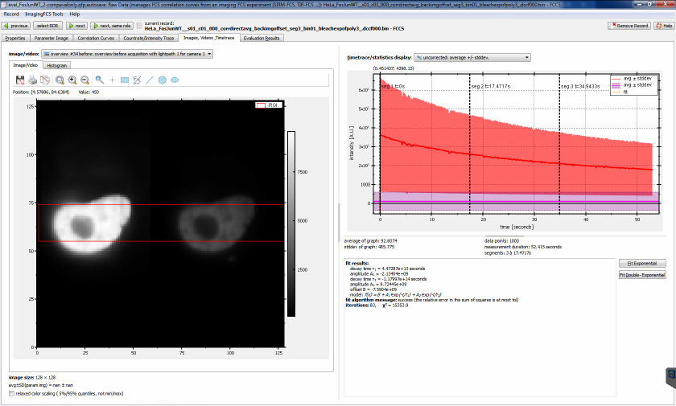

$$qf_commondoc_header.start$$ $$qf_commondoc_header.end$$
Parameter Image
Overview of Parameter Image Tab

This editor is used to display the result of fits as an image. It collects the fit results from a given set for each pixel. these fit results are displayed as a color-coded image (top left). In addition a second parameter may be selected that serves as measure for the goodnes of fit (top center plot). In the top right plot the overview image of the measurement is displayed. By clicking on one of the images, you may select the corresponding ACF/CCF to be displayed below. If you keep Ctrl pressed, while clicking, multiple pixels may be selected. The currently selected pixels may optionally be shown as overlays in the three top-row plots. In addition to the ACFs/CCFs, also the fits is displayed. The fitparameters are shown in the table on the right of the correlation function plot.
On the right-hand side you may select different options that change the appearance of the plots (color scales, ranges, ...).
The parameters to display are selected above the plots. First you will have to select a fit parameter set. If you use the FCS Fit plugin for fitting, a new set will be created for every differing combination of evaluation item (if you have two, you can distinguish these), fit algorithm and fit function. Then as a second step you may selectthe parameters to display. The parameters can be transformed with some basic mathematical transformations (none reciprocal 1/x, square root, logarithm) before they are displayed. The display settings (transformation, color coding, ...) are stored for every fit parameter and result set separately in the project, so you can switch to and back between different parameters, without loosing the settings.
The plots have several means to interact with the user.
Further display options:
- Correlation plot styles/Selection Display mode: here you can select what the correlation display should contain if several pixels are selected: Either the curves of all selected pixels are shown (which is possibly slow if you selected many pixels, or an average over these correlation curves is displayed. In that case the parameters table also contains the statistics of all selected fit results. Note that in DualView mode (see above) one average/statistics for every image channel will be displayed!
$$note:In many settings widgets in this tab, a right-click will open a context-menu, in which you can copy the settings in the clicked widget to all othe rrecords. So e.g. if you copy the "overview image settings" to all records, the same display settings (color bar, ranges, ...) will be used if you select a different record in this window!$$
Pixel Selection/Masking
There are several options to mask and select pixels: On the one hand you may "draw" a selection or mask onto any image, on the other hand, several automatic tools are grouped in the Mask and Selection menus. To do so, select one of the editing tools (rectangle, circle, ellipse, point, ...) above the plot and draw a selection on any of the image plots. Selections are a convenience tool. if you select sevral pixels, the lower part of the dialog will display the average and statistics of the selected pixels. Also you can convert a selection into a mask (mask/unmask selected). The correlation curves (and fit results) from masked pixels will not be taken into account for averages (e.g. for the average correlation curve/run -1), color-scaling etc. They can also be excluded from fits to save time.
In addition the current selection may be saved under a given name in the RDR, using the "stored selections" controls on the rhs column. A click on  will ask for a new name for the selection and save it. Afterwards the selection can be restored, by selecting it from the combobox next to this button. The current selection may be deleted from the list of stored selections by clicking
will ask for a new name for the selection and save it. Afterwards the selection can be restored, by selecting it from the combobox next to this button. The current selection may be deleted from the list of stored selections by clicking  .
.
Masks can also be created from the overview image or parameter images by setting a threshold (or an upper/lower threshold).
Often the background intensity (considered by a fit) should be set from a region in the image. This is possible by selection the region to average over and then using "Select|Set backgrund from selection". The backhround intensity will be saved as a RDR property BACKRGOUND... as AVERAGE_INTENSITY/MIN_LAGTIME. A second option "Mask|Set backgrund from masked" averages over all masked pixels for the background
Correlation Curve display options
QuickFit display the correlation curve for the currently selected pixel(s) in the bottom-left corner of the Parameter Image tab. On the rhs of the window, you can choos between different selection display modes, that control, exactly which correlation curves should be displayed:
- display average: Displays the average (and standard deviation) over the correlation curves from all selected pixels.
- display all: Displays all the correlation curves from all selected pixels.
- FCCS Mode: In this mode, QuickFit finds two ACFs and the FCCS correlation curve from the current group and displays them together. This is useful for fluorescnece cross-correlation data, as you can view the classic ACFs+FCCS plot. If more than one pixel is selected, this displays the average and standard deviation. This tool also calculates the cross-talk corrected relative CCF amplitudes, according to the method, described in $$ref:BACIA2012:K. Bacia, Z. Petrášek, and P. Schwille Correcting for spectral cross-talk in dual-color fluorescence cross-correlation spectroscopy., Chemphyschem. 13(5):1221-31. , doi: 10.1002/cphc.201100801, http://www.ncbi.nlm.nih.gov/pmc/articles/PMC3495304/$$:
$[ \mbox{relCCF}_{red}=\frac{\hat{G}_{CCF}}{\hat{G}_{ACF1}},\ \ \ \ \ \mbox{relCCF}_{green}=\frac{\hat{G}_{CCF}}{\hat{G}_{ACF0}} ]$
where $(G_{CCF})$ and $(G_{ACF...})$ are the cross-talk-corrected amplitudes of the cross- and auto-correlation function, given in the index. These amplitudes are estimated by an average over the first few lages of the correlation curves (correlation plot styles | crosstalk | avg. at the lower-right, grey range in the plot). The cross-talk is assumed to happen from the green into the red channel only (the reversed direction can be chosen in the combobox crosstalk | dir.. Then the corrected correlation amplitudes are:
$[ \hat{G}_{ACF0}=G_{ACF0} ]$
$[ \hat{G}_{ACF1}=\frac{\kappa^2 F_0^2G_{ACF0}+F_{1}^2G_{ACF1}-2\kappa F_{0}F_{1}G_{CCF}}{(F_{1}-\kappa F_{0})^2} ]$
$[ \hat{G}_{CCF}=\frac{-\kappa F_{0}G_{ACF0}+F_{1} G_{CCF}}{F_{1}-\kappa F_{0}} ]$
In these equations $(F_{0/1})$ are the background-corrected intensities in the green (0) and red (1) color channel and $(\kappa)$ is the cross-talk coefficient between the green and the red channel (which you can estimate from the background-corrected intensities in the two channels for a green-only sample).
Finally the red dashed line is the cross-talk-corrected amplitude of the red ACF (ACF1) and the blue dashed line is either the cross-talk-corrected CCF-amplitude, or the level of CCF, which can be explained by crosstalk only (depending on what you choose in the field selection display).
- DCCF Mode: In this mode QuickFit displays the correlation curves from all imFCS records in the current group. This is useful for distance cross-correlation data, as then the plot contains the ACF and all DCCFs, that you calculated. If more than one pixel is selected, this displays the average and standard deviation.
Histograms

$$see:See this help page for details on the histogram widget and the provided options.$$
This editor also calculates histograms of all currently displayed parameter values. You find them in the Histograms tab (behind the parameter image tab).
Like the parameter image plot itself, the histograms are calculated over the transformed parameters. In addition a boxplot shows the statistical parameters of the histogram.
On the rhs of the histogram plot, you can select some properties of the displayed histogram. If you checked the box mind exvluded runs, the pixels that were excluded (see above) are not used to calculate the histograms. The plots have several means to interact with the user.
If you selected more than one pixel in the parameter image, a second histogram shows the statistics of the selected pixels only.
The button "use settings for all RDRs" allows to use the currently set histogram configuretion/settings for all other imFCS records. Note that this is still specific to each parameter, so copying all settings for a diffusion coefficient will not change the histogram, if e.g. the particle number is selected as parameter!
Correlation Plots
 $$see:See this help page for details on the correlation plot widget and the provided options.$$
$$see:See this help page for details on the correlation plot widget and the provided options.$$
This editor also calculates correlation plot between the two currently displayed fit parameters. You find them in the Correlation plot tab (behind the histogram tab).

At the top of the tab, you can select, which parameters should be correlated (correlation plot mode). The default is "parameter 1 vs. parameter 2", but it is also possible to plot one of the parameters vs. the pixel intensity, or pixel-coordinates. If you plot versusthe image intensity, the spin-box channel allows to select the color-channel, from which to take the intensity.
In addition, if a scatter plot exists, each datapoint can be colored according to a third parameter, which can be selected from color mode.
The button "use settings for all RDRs" allows to use the currently set histogram configuretion/settings for all other imFCS records. Note that this is still specific to each parameter, so copying all settings for a diffusion coefficient will not change the histogram, if e.g. the particle number is selected as parameter!
Saving Data and Reports
You can save the parameter and goodnes-of-fit images as data files for further processing, or as a report:
 Data | Save data: Saves the parameter image and goodnes of fit image as a separate file. The selected parameter transformations are omitted. You can select different file formats:
Data | Save data: Saves the parameter image and goodnes of fit image as a separate file. The selected parameter transformations are omitted. You can select different file formats:
- Comma-Separated value: saves the data as text file which contains a matrix of numbers, separated by commas (,) and with a dot (.) as decimal separator.
- Semicolon-Separated value [German Excel]: saves the data as text file which contains a matrix of numbers, separated by semicolons (;) and with a comma (,) as decimal separator.
- SYLK: saves the data as a SYLK file which can be imported by many spread sheet programs
- float-TIFF: saves the data as a TIFF image with 32-bit floating point values in each pixel.
- 16-bit-TIFF: saves the data as a TIFF image with 16-bit unsigned integer values in each pixel.
- color-coded PNG image: saves the data as PNG image with the color coding used in the dialog (note: this uses the same transformation as the dialog).
The two images are saved into separae files. They end with the suffix .param.ext for the parameter image or .gof.ext for the goodnes of fit image.
 Data | Copy Images to Matlab: copies the currently displayed images to the clipboard as a Matlab script. When the script is executed it defines four variables, one for each type of data (parameter image, goodnes of fit image, mask image, overview image).
Data | Copy Images to Matlab: copies the currently displayed images to the clipboard as a Matlab script. When the script is executed it defines four variables, one for each type of data (parameter image, goodnes of fit image, mask image, overview image). Data | Copy Images as Columns: copies the currently displayed images to the clipboard in a format so they can be imported into spreadsheet programs. This function serializes the data, i.e. each image is copies as one column. Before the data is actually copied, you will be rpesented with a dialog that allows to select the columns that should be exported. It is also possible to add the pixel ID (integer number starting at (0,0) -> 0 and numbering all pixels in row-major order) and pixel coordinates.
Data | Copy Images as Columns: copies the currently displayed images to the clipboard in a format so they can be imported into spreadsheet programs. This function serializes the data, i.e. each image is copies as one column. Before the data is actually copied, you will be rpesented with a dialog that allows to select the columns that should be exported. It is also possible to add the pixel ID (integer number starting at (0,0) -> 0 and numbering all pixels in row-major order) and pixel coordinates.- Data | Insert Correlation Curves as new RDR into Project: This function takes the currently selected pixels and copies the according ACFs into a new fcs raw data record. This new RDR is then inserted into the project. Then you can perform additional FCS evaluations on these. Note that all information about the position of the pixels gets lost! Each pixel's ACF is inserted as a run into the fcs record.
- imFCS Tools | copy all CFs from group to table: This function will average the correlation functions in the current selection and copy it into a new table raw data record. Then it does the same for all files in the same rdr group as the current file. Finally the table will contain all averaged ACFs for the given selection from all files in the group and a plot contaiing all those. You can use this function to create FCCS overview plots like this one:

FCCS plot
 Save report: Save the contenst of the current window as a PDF or PostScript file.
Save report: Save the contenst of the current window as a PDF or PostScript file. Print report: Print the contents of the curret window.
Print report: Print the contents of the curret window.- Copy result fit result statistics
Tab "Correlation Curves"

In this tab you will see all correlation curves loaded into the current raw data record. On the rhs. you may choose how they are presented to you and see a list of all available runs. There are also buttons to exclude selected runs from the evaluation. These options are available:
- display average: select a display style for the average over all runs.
- display runs: choose how to display the different runs in the file
- no pixels: displays only the average
- all pixels: displays all runs in different colors
- all pixels (highlighted): displays all runs in gray, and the selected runs in red
- selected pixels: displays only the currently selected run
- select pixels to display: a list of all pixels in the image (row-major ordered). Select a pixel to display its intensity trace
- exclude/include pixel: excludes/includes the currently selected pixel ("select runs to display" list or overview image) from the evaluation. Note that the runs won't be deleted physically from the file, but will rather be marked as "do not use" in the project only. So the input data files are NEVER altered.
- overview: overview image (time-averaged image stack) of the measurement. Klicking a pixel selects the pixel. Excluded and selected pixels are displayed in blue/red.
- Graph/Plot: For information on how to interact with the plot, please see the according online-help page.
- Also see the page "$$qf_ui_rdr_helpfiletitle$$" for futher information about UI elements common to all raw data records.
Tab "Countrate/Intensity Trace"

In this tab you can look at the intensity time traces of each pixel.
On the rhs you may choose how they are presented to you and see a list of all available pixels and a time-averaged overview intensity image in which pixels may be selected by clicking. There are also buttons to exclude selected pixels from the evaluation. These options are available:
- data display mode:
- time-binned video: display the binned timetrace as calculated as "video" in the imagingFCS correlator tool after background and bleach correction
- uncorrected time-binned video: display the binned timetrace as calculated as "video" in the imagingFCS correlator tool. In this mode, also the bleach-correction fit functions for every pixel are displayed as dashed lines. The horizontal lines indicate the level of background intenisty.
- select pixels to display: a list of all pixels in the image (row-major ordered). Select a pixel to display its intensity trace
- exclude/include pixel: excludes/includes the currently selected pixel ("select runs to display" list or overview image) from the evaluation. Note that the runs won't be deleted physically from the file, but will rather be marked as "do not use" in the project only. So the input data files are NEVER altered.
- overview: overview image (time-averaged image stack) of the measurement. Clicking a pixel selects the pixel. Excluded and selected pixels are displayed in blue/red.
- Graph/Plot: For information on how to interact with the plot, please see the according online-help page.
- Also see the page "$$qf_ui_rdr_helpfiletitle$$" for futher information about UI elements common to all raw data records.
Tab "Images, Videos, Timetrace"

- This tab displays the overview images and videos stored together with the data. In the "image/video" combobox you can select the image or video, which is then displayed below. If a video is selected, control elements are accessible below. For each currently displayed image the according intensity histogram is available in the "Histogram" tab.
- On the rhs, the average intensity time-traces are displayed (averaged over all pixels).
General Tools
The tools mentioned in this section are available in the RDR editor in the menu imagingFCS Tools.
- recorrelate file: open a correlation dialog with the same input file, as the current imagingFCS RDR.
- post processing: bin correlation functions: this option enables (or disables, if binning is set to 1) an option that averages the correlation functions of N*N neighboring pixels into a single ACF. The image size is then either reduced to with/N * height/N, or is kept constant, but then the averaging patches overlap ("interleaved binning mode"). It is comparable to binning in the correlator, but does not require recorrelating the data. It should only be used, when recorrelating is not possible, as the latter poses the better option. $$note:This option may be dangerous, as the image size is reduced and old fit results cannot be used anymore (they are not altered though!)$$
- copy all CFs from group to table: copy all correlation functions as displayed in the parameter image editor to a table RDR
- copy average CF from all files to table: copy the average run correlation fucntion from all imFCS files in the project into a table RDR.
- copy selected CF from all files to table: copy the correlation functions from the currently selected pixels (in the parameter image RDR) and from these in all applicable imagingFCS record in the project, into a table RDR
- copy selected pixels average CF from all files to table: same as above, but does not copy the single correlation functions, but averages over all selected pixels in each file.
- background from mask in all RDRs: calculates the background intensity from the mask in all RDRs in the current project.
References
$$references$$